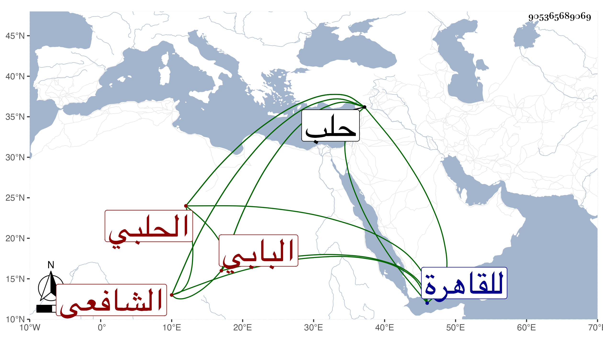

0902Sakhawi.DawLamic.ITO20230111-ara1.EIS1600.905365689069
Biography ID: 905365689069
أحمد بن أبي بكر بن علي بن سراج شهاب الدين البابي الأصل الحلبي الشافعي . تفقه بعبيد بن أبي المنى وتخرج في الكتابة بابن المجروح وناب عن ابن خطيب الناصرية فمن بعده بالباب إلى أن انفصل عنه وأنشد حينئذ :
| عاديتمونا بلا ذنب ولا سبب | وقد عدوتم كما الحيات تنساب |
| لأرحلن إلى أرض أعيش بها | لا الناس أنتم ولا الدنيا الباب |
وتكسب بالشهادة بل وقع للسيد التاج عبد الوهاب حين قضائه بحلب وتردد للقاهرة غير مرة وأخذ عن شيخنا فيما قيل وكتب عنه بعض الطلبة من نظمه وغيره في الهجاء كثيرا . مات في عيد الأضحى سنة سبع وثمانين بحلب وقد جاز الستين .
